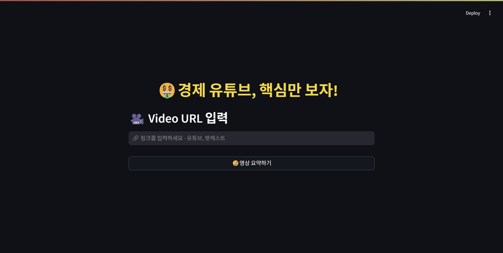
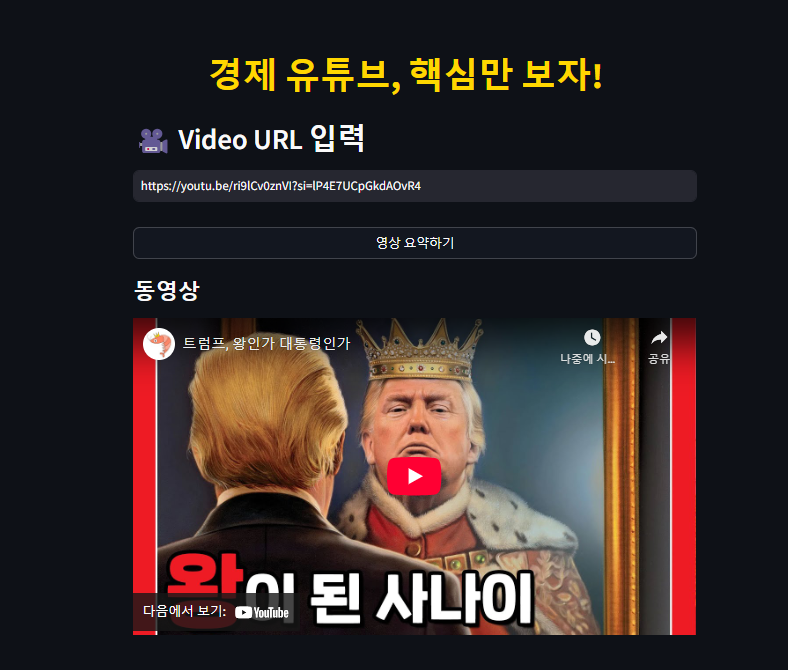
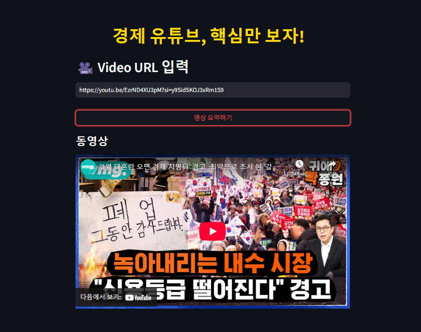
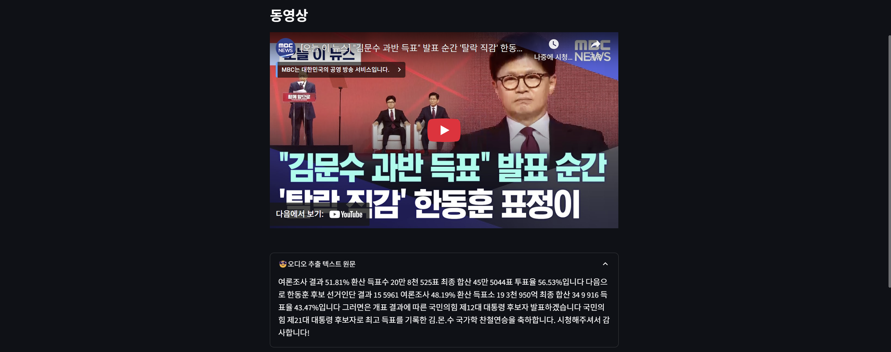
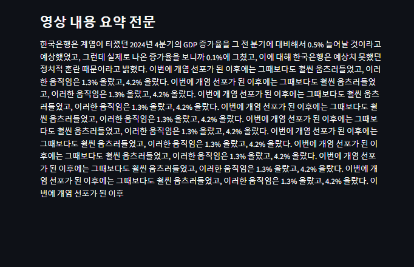
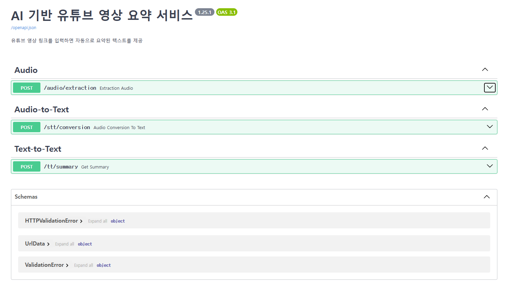
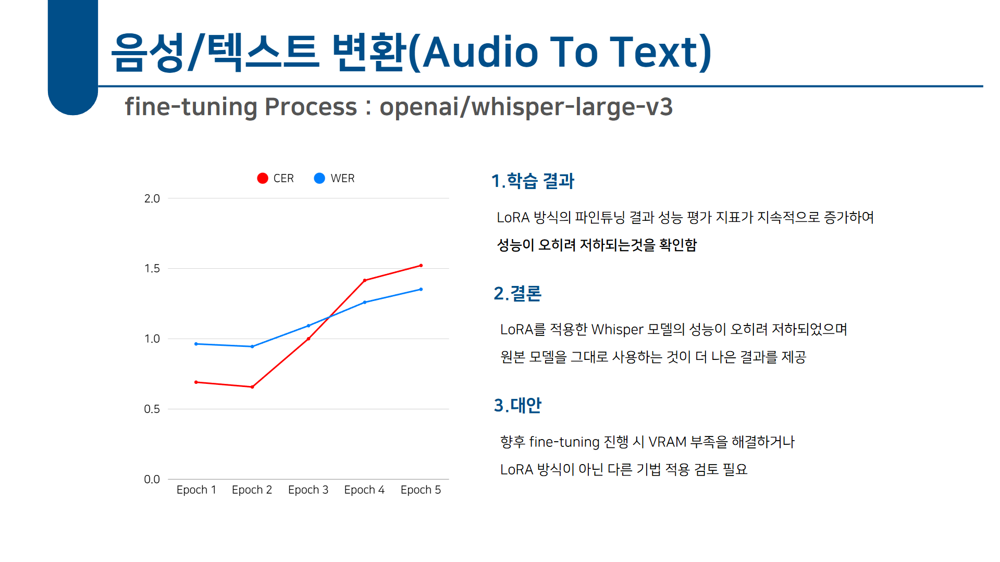

EconDigest — Finance YouTube Summarizer
Problem
Business challenge
The "time-efficiency" trend — consumers increasingly want to skim only the parts of video and audio content that matter to them, driving demand for summarization services.
Social challenge
Senior financial literacy — Koreans in their 50s and 60s are now active in mobile banking and asset management, but they still struggle with complex information.
User pain points
- The friction of watching long videos
- Difficulty understanding specialized financial terminology
- Missing important content
Solution
What we built
An AI-driven summarizer for finance YouTube channels.
One click turns a video into a written summary report. Built around a Whisper (STT) + Gemma 2 (LLM) "extract → transcribe → summarize" pipeline.
Core value
- Efficient information delivery: turn finance videos into high-density written briefs
- Closing the financial-knowledge gap: support users with limited information access
Highlights
- End-to-end pipeline — one-click audio extraction → STT → summary
- STT engine — Whisper-large-v3 for Korean speech
- Model compression — Gemma-2-2b-it with QLoRA 4-bit quantization
- Modular backend — 3 FastAPI service routers (Audio, STT, Summary)
- Fine-tuning evaluation — analysis of LoRA/QLoRA limits + baseline comparison framework
Target users
- Non-experts in AI/finance (especially seniors)
- Busy professionals and students
Architecture Overview
- Audio extraction: yt-dlp + FFmpeg (192 kbps MP3)
- Speech-to-text: OpenAI Whisper-large-v3 (noise-robust, strong Korean accuracy)
- Text summarization: Google Gemma-2-2b-it (QLoRA fine-tuning, 4-bit quantization)
- Backend: FastAPI (3 routers: Audio, STT, Summary)
- Frontend: Streamlit
What I Built
Project leadership
- Owned end-to-end pipeline design and integration as Team Lead
- Distributed roles and managed the schedule
Backend development
- FastAPI-based RESTful API design
- Three modular services (Audio, STT, Summary)
- yt-dlp + FFmpeg audio-extraction pipeline
- HTTPException-based error handling and GPU memory management
Frontend development
- Single-button Streamlit UI
- Progress display and result expander panel
- Embedded video playback
AI pipeline integration
- Connected Whisper → Gemma 2 pipeline
- Designed a 3-step translation prompt (KO → EN → summary → KO)
- Post-processing: dedup, whitespace cleanup
Service Demo

YouTube URL input
Click "Summarize"
Processing
Summary result
Backend APIModel Fine-Tuning
STT (Whisper)
We attempted LoRA-based fine-tuning, but error rates (CER, WER) climbed each epoch — performance degraded. We concluded the original Whisper-large model was better used as-is.

LLM (Gemma 2)
Tuned with QLoRA (quantization + LoRA) for memory efficiency. The 4-bit BitsAndBytes quantization reduced VRAM usage but summary quality dropped below the un-tuned baseline. A clear trade-off: lighter ≠ better.
Outcomes & Retrospective
Key outcomes
- Built an automatic audio-extraction pipeline on yt-dlp + FFmpeg
- Integrated FastAPI backend with Streamlit frontend
- Reduced VRAM via QLoRA (4-bit quantization)
Lessons learned
- STT LoRA fine-tuning failed: insufficient understanding of fine-tuning and underestimating infrastructure constraints
- LLM QLoRA backfired: lighter, but lower quality than the un-tuned baseline
- Long-text context loss: surfaced the need for chunking
- Repeated sentences: solved with post-processing
Technical growth
This was my first STT/LLM pipeline and fine-tuning effort, and several of my approaches were simply wrong. But the experience taught me the importance of measuring baseline performance before tuning, up-front awareness of infra constraints, and the trade-off between quantization and quality. The failures clarified what to study next.
Future improvements
- Improved speaker diarization
- UI optimized for older users (font sizing, etc.)
- Additional training on specialized financial terminology